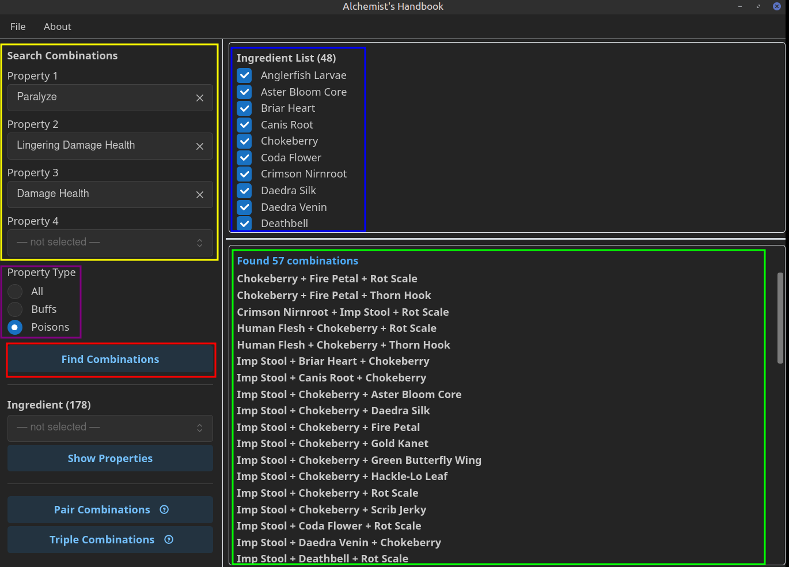
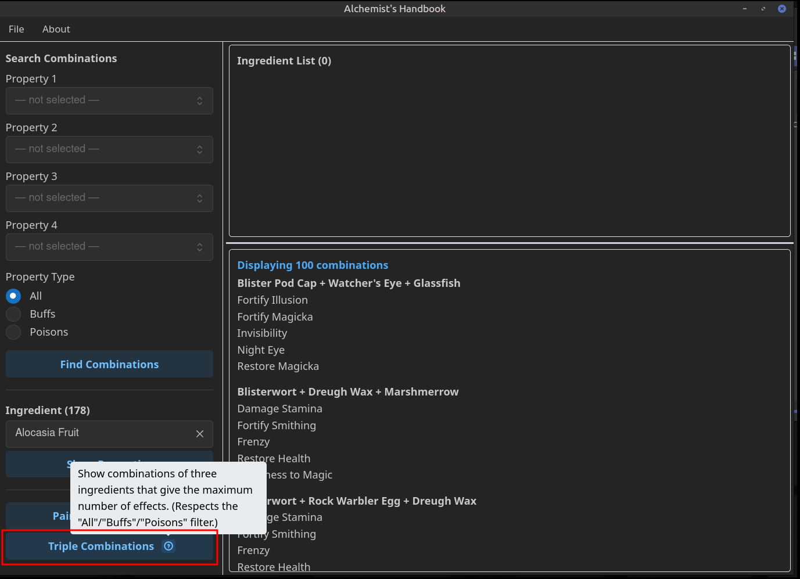
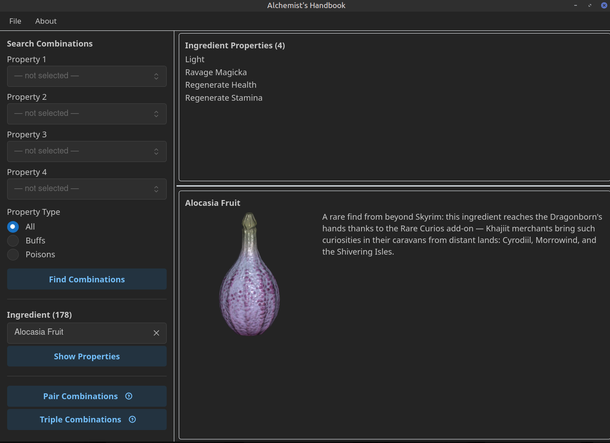
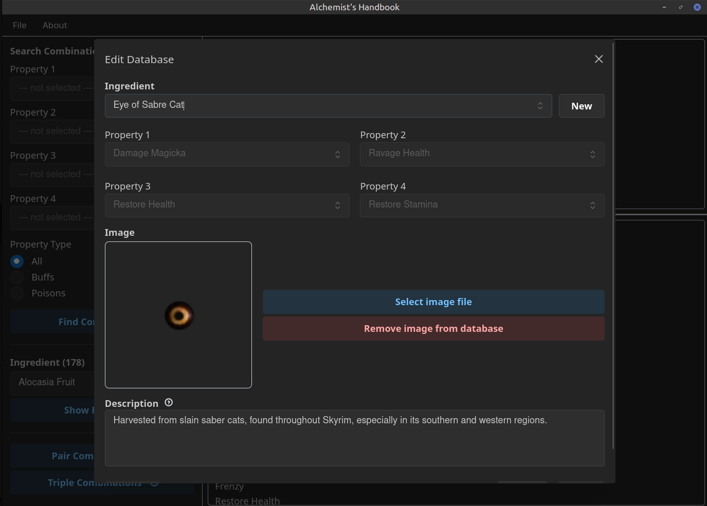
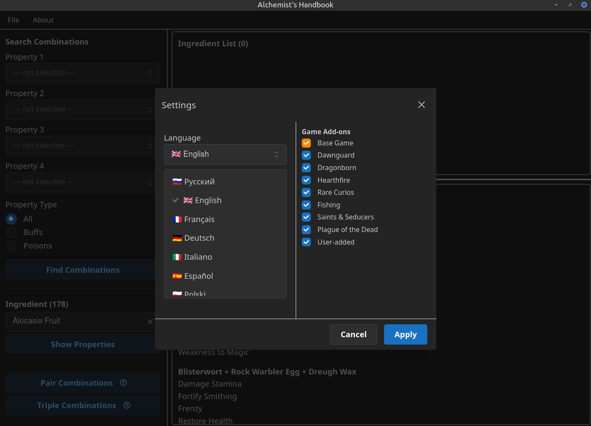
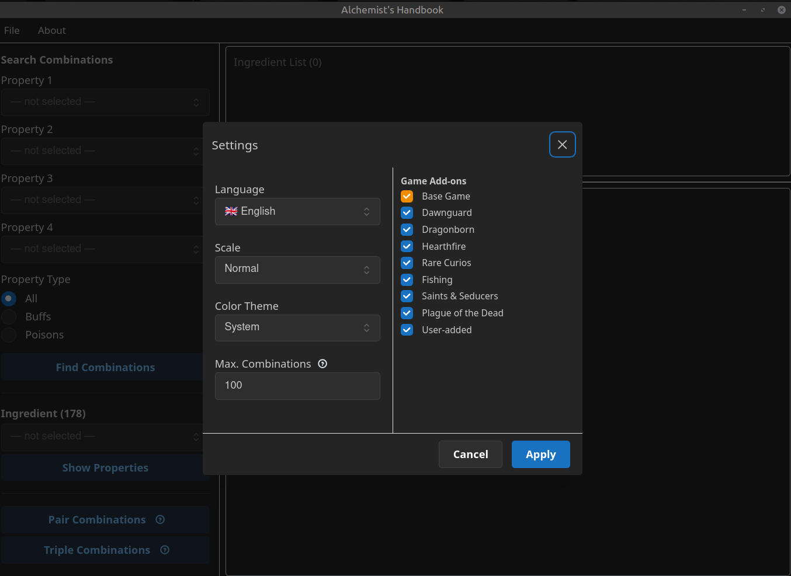

Русский черновик для согласования. После правок — переводим в финальный BBCode для полей "Description" и "Permissions and Credits" на сайте.
Настольное приложение-помощник для алхимии в The Elder Scrolls V: Skyrim.
Полностью независимое от игры приложение позволяет получить все возможные комбинации алхимических ингредиентов для получения зелья с заданными свойствами, а также является справочником по свойствам всех ингредиентов Skyrim, существующих как в базовой версии игры, так и в официальных дополнениях Dawnguard, Dragonborn, Hearthfire и т.д. С помощью настроек Вы можете управлять списком активных источников, чтобы исключать лишние ингредиенты из подбора комбинаций, если у Вас их нет.
Интерфейс полностью переведён на 9 языков: русский, английский, немецкий, испанский, французский, итальянский, польский, японский и китайский. В переводах использованы формулировки из официальных локализаций игры.
База данных приложения редактируема: вы можете менять описание и изображения ингредиентов, добавлять новые ингредиенты, чтобы они участвовали в поиске комбинаций для зелий.
Выберите до 4 нужных эффектов (жёлтая рамка) и фильтр типа свойств — All / Buffs / Poisons (фиолетовая рамка), затем нажмите Find Combinations (красная рамка). Справа появится список подходящих ингредиентов (синяя рамка) и все сочетания из 2–3 компонентов, дающие выбранные эффекты (зелёная рамка). Каждый ингредиент в этом списке можно включить или выключить отдельным чекбоксом, чтобы точнее настроить список сочетаний — удобно, например, если какого-то ингредиента у вас пока нет: снимите галочку, и поиск перестанет предлагать варианты с ним.

Кнопки Pair Combinations и Triple Combinations (красная рамка) сразу находят сочетания с максимальным числом совпадающих эффектов — без ручного выбора конкретных свойств. Наведите на значок (i) рядом с кнопкой, чтобы увидеть подсказку с описанием.

Выберите ингредиент из списка и нажмите Show Properties — справа появятся его 4 свойства, изображение и описание.

В меню File → Edit Database можно добавить новый ингредиент, изменить его свойства, картинку и описание — удобно для внесения собственных находок или правок под изменённые модами ингредиенты.

В Settings выберите нужный язык из списка — интерфейс переключится мгновенно, без перезапуска приложения.

Там же, в Settings, можно включить или выключить каждый источник ингредиентов по отдельности (базовая игра, официальные дополнения, Rare Curios, добавленные вручную) — поиск учитывает только включённые источники.

Windows 10/11, с установленным WebView2 Runtime (уже идёт предустановленным на актуальных сборках Windows 10/11 — если его нет, приложение само подскажет, откуда скачать).
Установщик не нужен — скачайте архив, распакуйте куда угодно и запустите .exe. База данных ингредиентов зашита прямо в исполняемый файл, копировать рядом с ним больше ничего не нужно.
Полный исходный код доступен на GitHub: github.com/Rax-il/skyrim-alchemist-handbook (опубликован для прозрачности — условия использования см. на вкладке Permissions).
Это фанатский инструмент, никак не аффилированный с Bethesda Softworks. Все права на The Elder Scrolls V: Skyrim, его содержимое и лор принадлежат Bethesda Softworks LLC. Приложение не изменяет файлы игры и не требует её наличия — это отдельная справочная программа, запускается из собственной папки и работает только в ней.
Автор: Rax_il
Права использования: все права защищены. Исходный код опубликован на GitHub исключительно для прозрачности — это не даёт права копировать, изменять, распространять или перезаливать это приложение или его базу данных, полностью или частично, без явного разрешения автора.